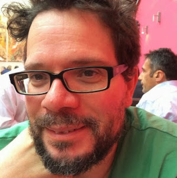
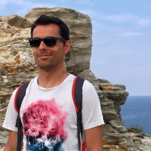

L’accueil | Le programme | Les orateurs | hackergarten | S’enregistrer | L’équipe | Le lieu
Vous pouvez retrouver la liste complète de nos speakers sur cette page. Vous pouvez réserver vos places sur cette page.
Vous pouvez également vous inscrire par la formation professionnelle, grâce à OXiane, notre partenaire formation pour cet événement.
Les détails du parcours pédagogique se trouvent ici : https://www.oxiane.com/parcours-pedagogique-javaday-2023/. Vous pouvez prendre contact avec OXiane à l’adresse suivante : formation@oxiane.com.
En attendant la publication de Java 21, la prochaine version diffusée en septembre de cette année, et pour en donner quelques aperçus, cette présentation brosse une revue détaillée des nouveautés qui devraient être proposées dans cette future version LTS de Java, issues des projets Amber, Loom et Panama d’OpenJDK.
Passionné par le développement de logiciels et par la veille technologique, je possède une longue expérience, en SSII/ESN et personnelle, dans l’écriture d’applications avec différents langages. Je suis actuellement Senior tech lead pour la société Sciam. Utilisant Java depuis sa version 1.0, j’aime partager ma passion pour cette plateforme et son écosystème notamment en me consacrant, depuis presque vingt années, à la rédaction de deux tutoriels, intitulés “Développons en Java”, diffusés sous licence GNU FDL. Ce travail m’a permis d’être nommé Java Champion. Je suis également un des cofondateurs du Lorraine JUG.
La dernière mouture de Jakarta EE est arrivée en fin d’année dernière. Sortie enfin de la migration Java EE vers Jakarta EE, cette nouvelle édition apporte de réelles nouveautés utilisables telles quelles ou dans votre stack préférée comme MicroProfile, Quarkus ou même Spring (!). Au même moment Microprofile 6.0 est également arrivé dans un repository près de chez vous. Cette nouvelle édition s’appuie directement sur Jakarta EE 10 pour simplifier son socle et proposer de nouvelles fonctionnalités. Dans cette présentation nous passerons en revues les principales nouveautés de ces 2 stacks majeures. Puis non évoquerons les évolutions présentent et à venir sur les frameworks ou produits qui les implémentent.

Antoine est un Java Champion et l’ancien spec lead de Jakarta EE CDI. Il a fait partie de l’équipe de lancement de Quarkus chez Red Hat et à travaillé sur des specs MicroProfile majeures comme Fault Tolerance ou Health Check. Aujourd’hui, Antoine est architecte et expert technique chez SCIAM. Il pilote des projets complexes en utilisant en grande partie les technologies qu’il a contribué à mette au point.
Comment compiler une application Spring en code natif et profiter d’un temps de démarrage rapide et d’une consommation mémoire réduite ? Pendant cette session, nous vous présenterons le moteur AOT qui permet aux applications Spring d’adopter la technologie GraalVM Native images. Comment procéder, quelles sont les limitations, comment participer à la communauté GraalVM ? Nous évoquerons tous ces points en utilisant une application exemple.

Brian est membre de l’équipe Spring chez VMware. Il travaille sur le Spring Framework, sur Spring GraphQL et sur Spring Boot.